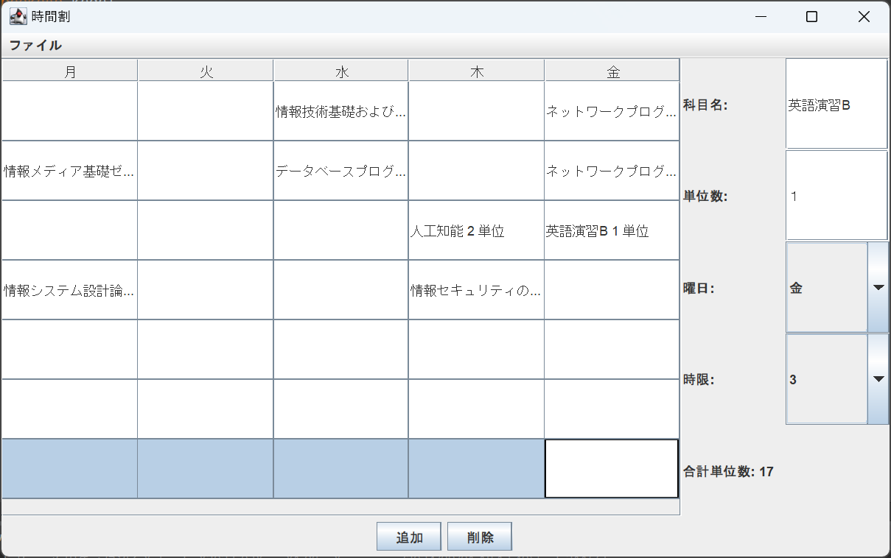

概要: JavaのGUIプログラミングを用いて時間割を作成できるアプリケーション
使用技術: Java
機能: 科目名・単位数・曜日・時限を入力し追加をすると左の表に追加され、合計単位数も出るようになっている。
消したいときは消したいところを選択し、削除を押すと消えるようになっている。
またファイルとして書き出したり、取り込んだりすることも可能。
概要:
使用技術: Java
機能:


概要: webSocketを使用したリアルタイム通信のwebアプリケーション
使用技術: JavaScript, Node.js, HTML, CSS
ルール: 各プレーヤーに「A～K」のトランプ13枚と白紙のカード2枚を配り、3枚で1組として5組作り自分のハンドとする。
カードの強さはブラックジャックに準じ「J,Q,K」は10として扱い、役の強さはカードの合計が21に近い方が強い。
一度使用したハンドは使用することは出来ない。
フォールドすると相手に１ポイント追加され、各ラウンドの勝負に勝つと3ポイント獲得することができる(5ラウンド制)
Project 4の詳細情報。ここにプロジェクトの説明や技術スタックなどを記載します。


概要: 収入・支出を視覚的に確認することが出来るwebアプリケーション
使用技術: JavaScript, Node.js, HTML, CSS, PostgreSQL
機能: 収入・支出の登録、収入・支出のグラフ表示、入力履歴の表示、ログイン機能